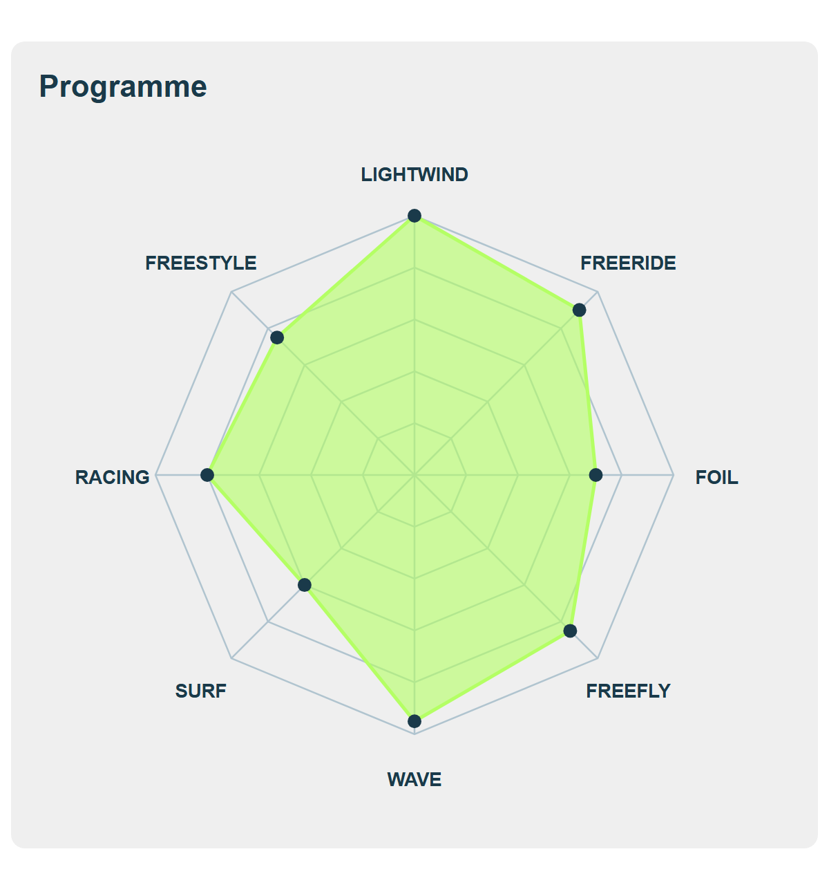
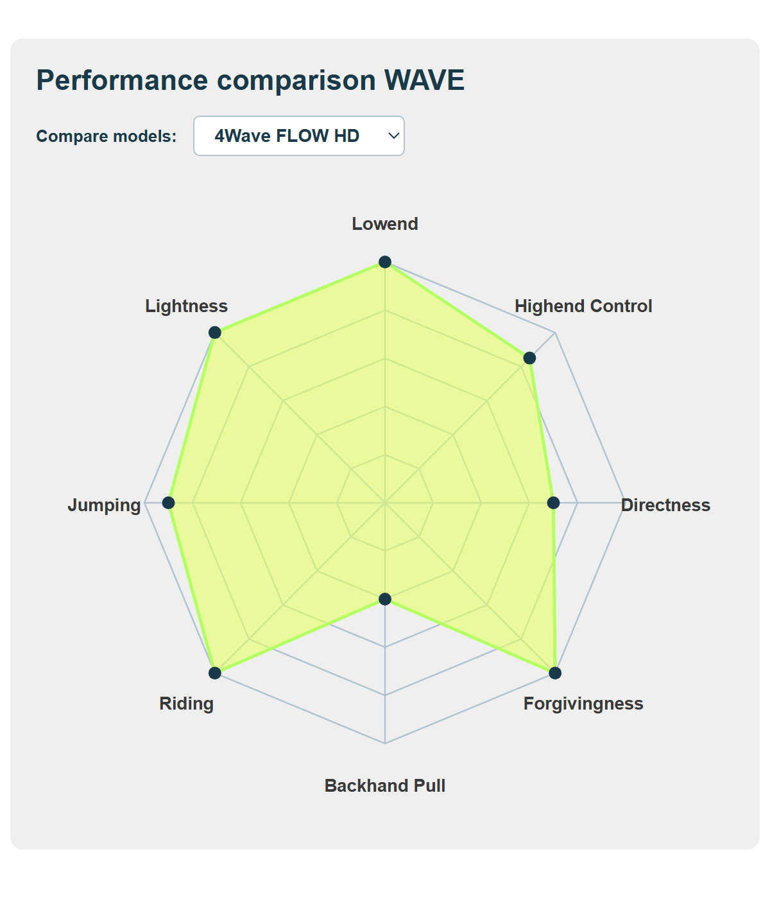
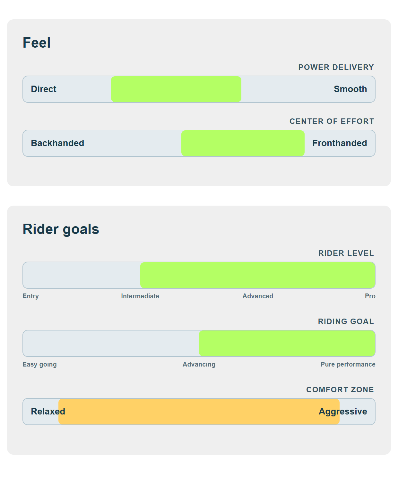

Scriptless HTML chart & range-bar components — one shared rendering script.
patrik-components.js
Every page contains only markup and data-* configuration. All rendering
logic and styling live in a single external file. To use the components on any page, drop in the
relevant HTML block and load the script once:
<!-- once per page, near the end of <body> --> <script src="patrik-components.js"></script>
.patrik-radar-chart and
.patrik-range-bar element and builds them from their attributes. No inline JavaScript needed.
<div class="patrik-radar-chart" data-axes="LIGHTWIND,FREERIDE,FOIL,FREEFLY,WAVE,SURF,RACING,FREESTYLE" data-values="100,90,70,85,95,60,80,75"></div>
data-values map to data-axes by position. Values are 0–100.
Add or remove axes freely — the octagon adapts to any number of axes.

chart.html — the single-dataset example above.Put a <select class="patrik-radar-select"> inside the chart. Each option's
value is the comma list of values (same order as data-axes). The script wires up
switching automatically.
<div class="patrik-radar-chart" data-axes="Lowend,Directness,Riding,Jumping"> <select class="patrik-radar-select"> <option value="100,70,100,90">4Wave FLOW HD</option> <option value="90,95,90,100">4Wave FLASH HD</option> </select> </div>

chart-selector.html — pick a model from the dropdown to switch datasets.| Attribute | Required | Description |
|---|---|---|
data-axes | yes | Comma list of axis labels. |
data-values | yes* | Comma list of values 0–100 (*for single-dataset mode). |
<select.patrik-radar-select> | yes* | Use instead of data-values for a switchable chart. |
data-fill | no | Polygon fill colour. |
data-stroke | no | Polygon outline colour. |
data-point | no | Data-point dot colour. |
data-grid | no | Grid line colour. |
data-axis-color | no | Axis (spoke) line colour. |
data-label-color | no | Axis label text colour. |
A range bar shows a band (a range, not a single value) between two poles, with a title above and configurable colours. Two modes:
A label at each end; the band highlights data-min→data-max as percentages (0–100).
<div class="patrik-range-bar" data-title="Power delivery" data-left="Direct" data-right="Smooth" data-min="25" data-max="62"></div>
Evenly spaced stop labels beneath the bar. With data-scale-index, data-min/data-max
are stop indexes (0-based) instead of percentages.
<div class="patrik-range-bar" data-title="Rider level" data-scale="Entry,Intermediate,Advanced,Pro" data-scale-index="true" data-min="1" data-max="3"></div> <!-- band spans Intermediate → Pro -->

range-bars.html — two-pole bars (Feel), scale bars with stops (Rider goals), and a custom-colour example (Comfort zone).| Attribute | Description |
|---|---|
data-title | Small uppercase title above the bar. |
data-left / data-right | End-pole labels (two-pole mode). |
data-scale | Comma list of evenly spaced stop labels (scale mode). |
data-scale-index | Present ⇒ treat min/max as stop indexes, not percentages. |
data-min / data-max | Start / end of the highlighted band. |
data-value | Optional single marker line (0–100). |
data-range | Band fill colour. |
data-track | Track (background) colour. |
data-text | Label text colour. |
data-border | Track border colour. |
index.html — landing hub linking to every builder & example.patrik-components.js — the shared rendering script (the only script any page loads).builder/radar-chart.html — interactive builder for the radar chart.builder/range-bars.html — interactive builder for range bars.examples/chart.html — single radar chart example.examples/chart-selector.html — radar chart with a model-comparison dropdown.examples/range-bars.html — Feel & Rider-goals range bars.patrik-components.js once per page, even with many component blocks.#1a3a4a + lime #b4ff64); only set data-* colours to override.PatrikComponents.render() in the console / your own code.rgb(), rgba(), named.